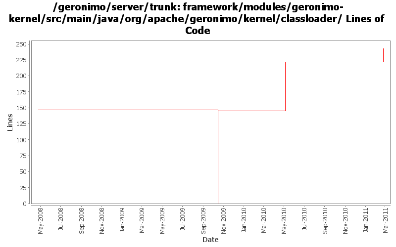

[root]/framework/modules/geronimo-kernel/src/main/java/org/apache/geronimo/kernel/classloader

| Author | Changes | Lines of Code | Lines per Change |
|---|---|---|---|
| Totals | 22 (100.0%) | 248 (100.0%) | 11.2 |
| djencks | 8 (36.4%) | 145 (58.5%) | 18.1 |
| gawor | 4 (18.2%) | 78 (31.5%) | 19.5 |
| xuhaihong | 5 (22.7%) | 23 (9.3%) | 4.6 |
| jdillon | 3 (13.6%) | 2 (0.8%) | 0.6 |
| gdamour | 2 (9.1%) | 0 (0.0%) | 0.0 |
GERONIMO-4945 Load enum with normal classloader
22 lines of code changed in 1 file:
GERONIMO-5279: An attempt at making gbean proxies work. The remote operations like install-library seems to be working now
77 lines of code changed in 1 file:
GERONIMO-5008 Create util methods for all the Geronimo components
0 lines of code changed in 1 file:
GERONIMO-4916 step 2 move sandbox osgi framework into trunk
145 lines of code changed in 1 file:
GERONIMO-4916 step 1 remove old framwork
0 lines of code changed in 5 files:
GERONIMO-4785 "useCaches" property of JarFileUrlConnection doesn't work (Patch from Jack Cai)
0 lines of code changed in 2 files:
load annotation classes from the right (parent) classloader (GERONIMO-4782)
1 lines of code changed in 1 file:
GERONIMO-4679 many [ERROR] "The protocol for the JAR file's URL is not supported" in the build log when building geronimo on windows (Patch from Shawn Jiang)
1 lines of code changed in 1 file:
ensure resources can only be loaded from within the directory specified (GERONIMO-4600)
0 lines of code changed in 2 files:
Add private-classes element which allows specific classes to be hidden from all child configurations. In effect, they are private to the configuration.
(GERONIMO-4403) Provide a mechanism to hide specific classes of a configuration to all its children
0 lines of code changed in 2 files:
GERONIMO-4375 xbean upgrade requires asm upgrade. GERONIMO-4360 minor build fix to increase tm version independence
0 lines of code changed in 2 files:
More loggers back to statics
2 lines of code changed in 1 file:
(GERONIMO-3985) Use SLF4J as the primary logging facade for Geronimo
0 lines of code changed in 2 files: